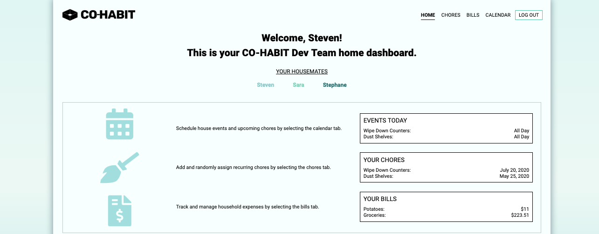
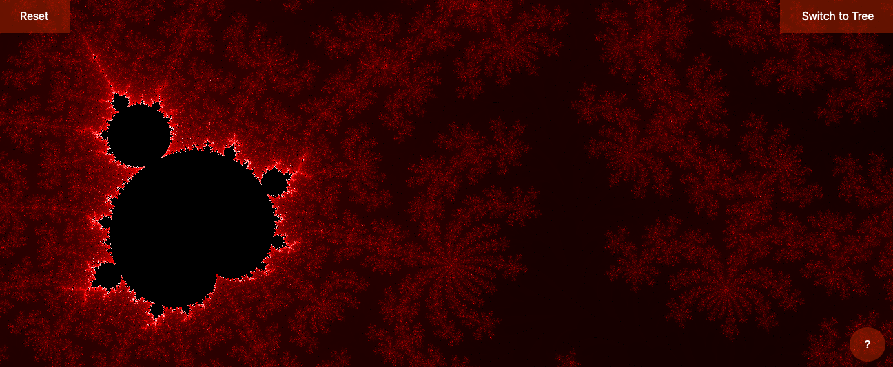
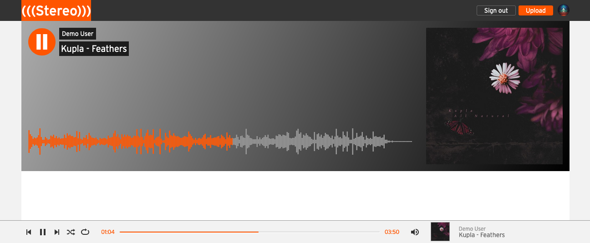

Experience
Plaid — Technical Account Manager
June 2022 – Present
Technical lead for a $20M+ portfolio of high-growth fintech
companies. I sit at the intersection of engineering, product, and
client strategy — my job is continuous customer discovery:
understanding what fintech engineering teams are trying to build,
what they need next, and how to get it to them.
-
Voice of the customer within Plaid — synthesize field
insights across the portfolio into prioritized, actionable
feedback that shapes Product and Engineering roadmaps
-
Lead QBRs and technical roadmap discussions with engineering,
product, and executive stakeholders, aligning customer growth
plans with Plaid's product strategy
-
Run in-depth integration audits to find opportunities, size
their impact, and drive them to resolution — e.g., +$30K
MRR recovered from previously unbilled API traffic
-
Scope tailored solutions for high-throughput lending platforms
— tuning data quality, latency, and resiliency through
deep analysis of customer architectures
Plaid — Technical Support Engineer
May 2021 – June 2022
-
Subject matter expert for Plaid's Income Verification product
from beta through GA — funneled early-access customer
feedback to Product and Engineering and helped shape the launch
-
Partnered with high-touch clients to scope and prioritize
strategic integrations
-
Designed and delivered technical enablement content (training
videos, live sessions), accelerating ramp time for Customer
Engineering and Support teams
Earlier
Full-stack software engineering at App Academy, and before that
four years scaling operations at an SF food-tech startup —
growing from team lead to technical operations manager. That's
where I first did product work: translating customer and
operational needs into features for the website and the internal
inventory, tracking, and dispatch systems.
Co-habit

A MERN stack web application that enables housemates to
automatically assign chores, split shared bills, and notify each
other of upcoming events
-
Backend — Node.js, MongoDB, Express, Passport.js
-
Frontend — React, Redux, Axios, Sass
Fractals

A Vanilla JavaScript Mandelbrot Set Visualizer.
Stereo

A music streaming and sharing app, inspired by Soundcloud.
-
Backend — Ruby on Rails, PostgreSQL, AWS S3, BCrypt
-
Frontend — React, Redux, AJAX, Sass, Wavesurfer.js
Live demos for Co-habit and Stereo were retired along with
Heroku's free tier — the code lives on in the repos.
Skills
-
JavaScript
-
Python
-
React
-

Redux
-
Node
-
Express
-
Ruby
-
Rails
-
PostgreSQL
-
MongoDB
-
AWS
-
Git
-
HTML
-
CSS
-
Jira
Day to day I live in customer conversations and data: SQL queries
and dashboards in Mode and Tableau to size opportunities, log
analysis in Kibana to get to root causes, Jira to keep
cross-functional work moving, and AI-assisted tooling with Claude
and Codex. The engineering background means I can prototype an
idea, read the code behind a bug, and hold my own in an
architecture review.
About
Hi, my name is Stéphane and I love to build things people need.
My career has circled the product from every side: I ran
operations at a startup and turned what the team needed into
internal tools, trained as a full-stack engineer to build things
myself, and now work as a Technical Account Manager at Plaid
— embedded with engineering teams at some of the
fastest-growing fintech companies, hearing firsthand what they're
building and where the product should go next.
The throughline is product thinking: the best part of my job is
spotting the pattern across customer conversations, making the
case for what to build, and seeing it ship.
When I'm not working, I like to explore / hike in remote areas, and fly my drone to capture the views (I shot the background photo for this website in the Dolomites).
San Francisco Bay Area
App Academy · Université de Montréal
Résumé
Contact